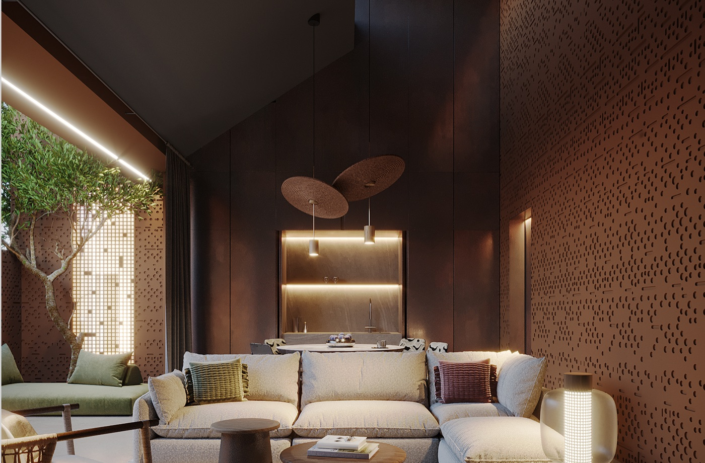
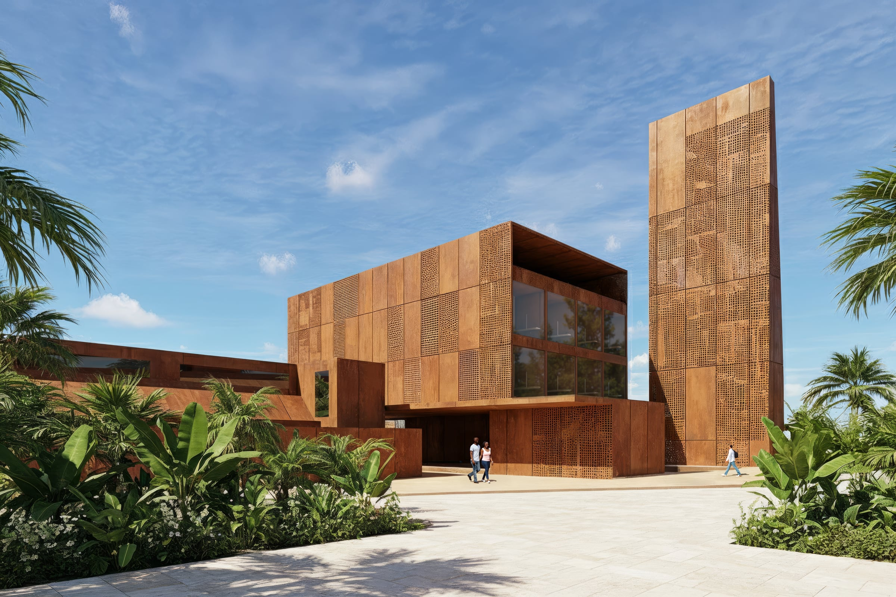
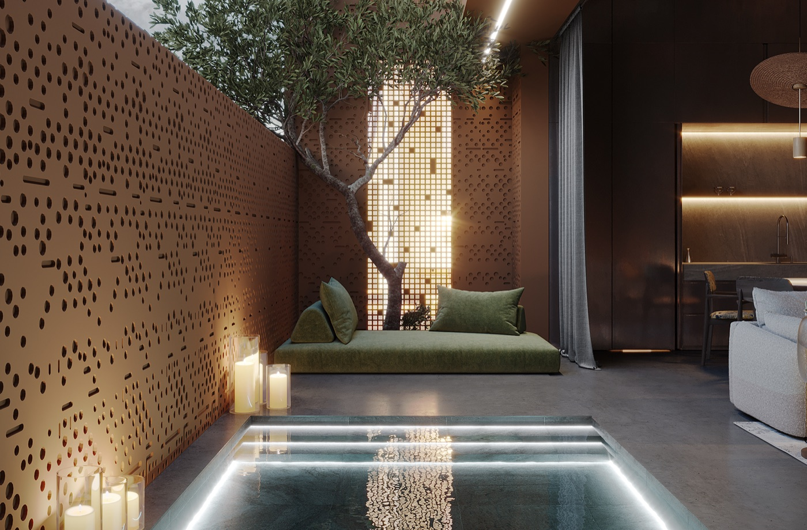
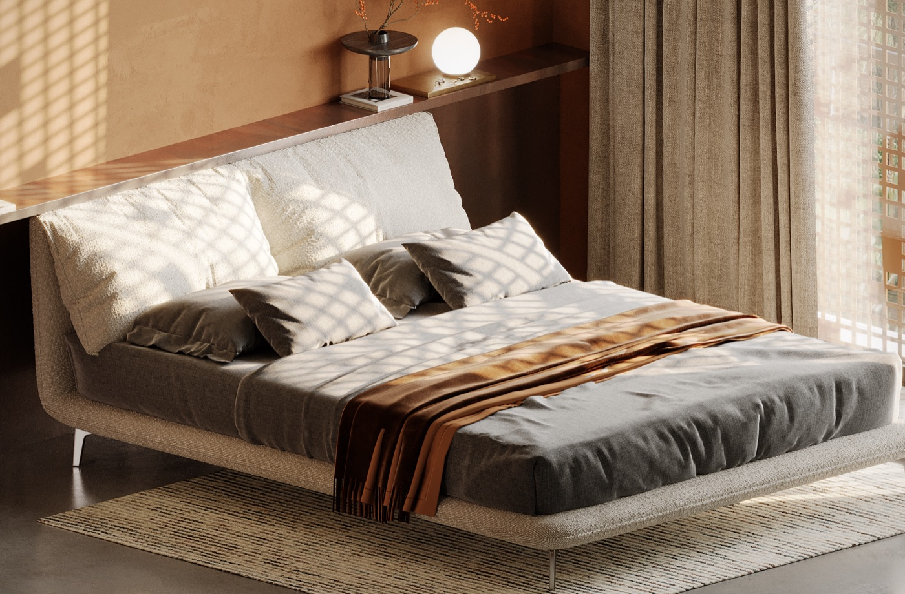
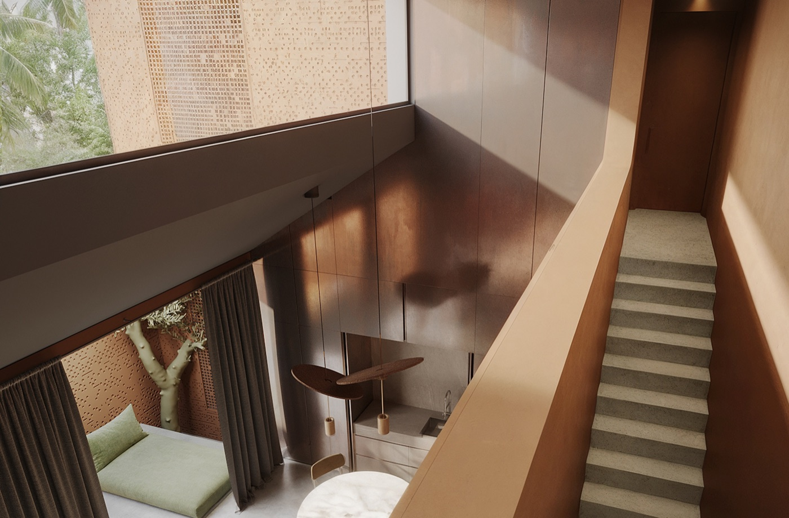
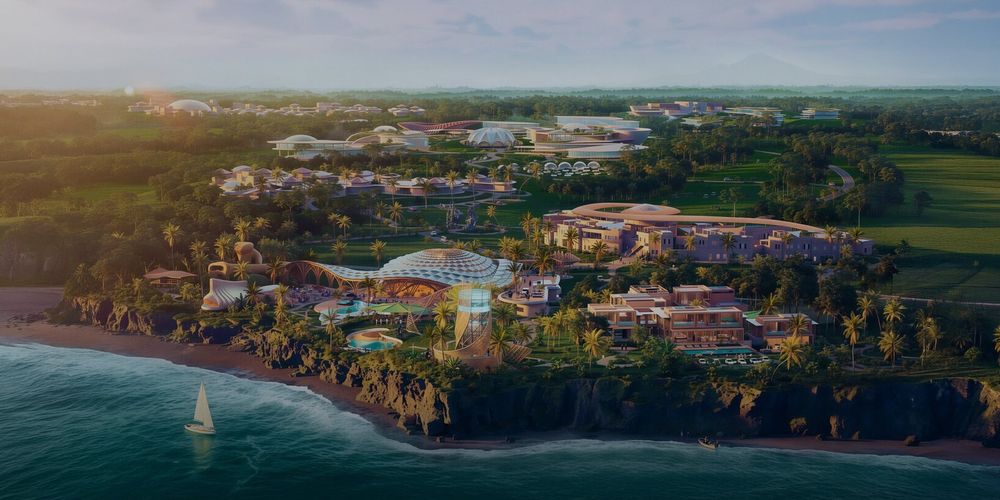
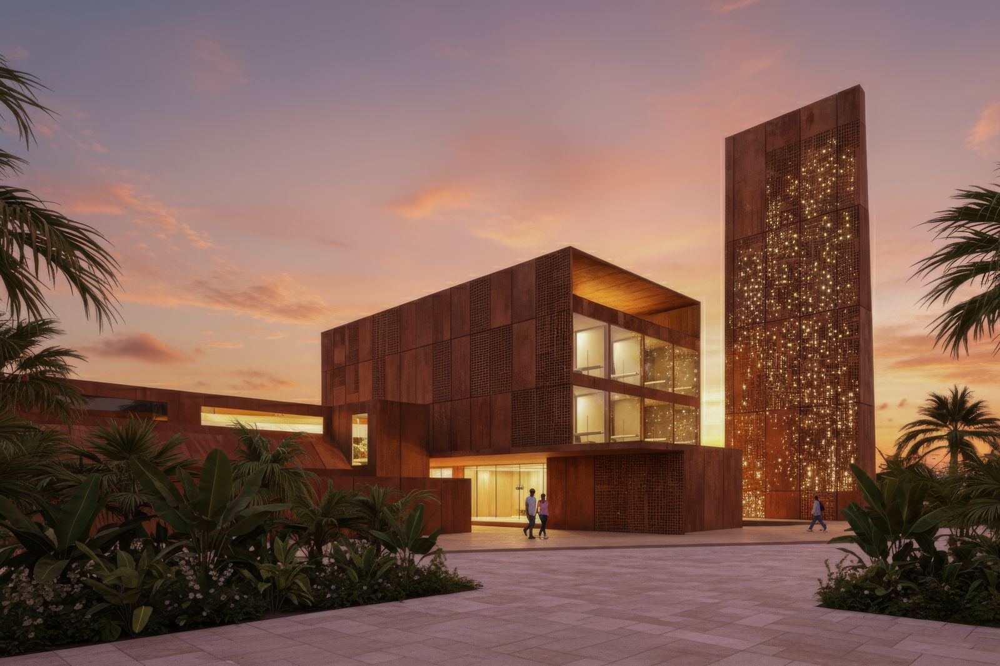
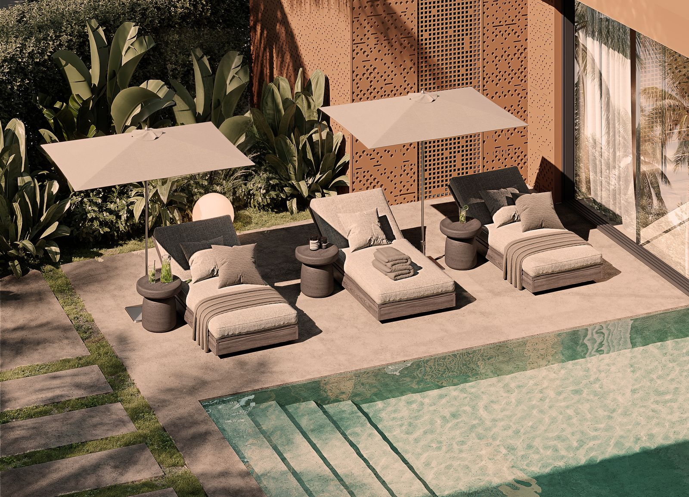
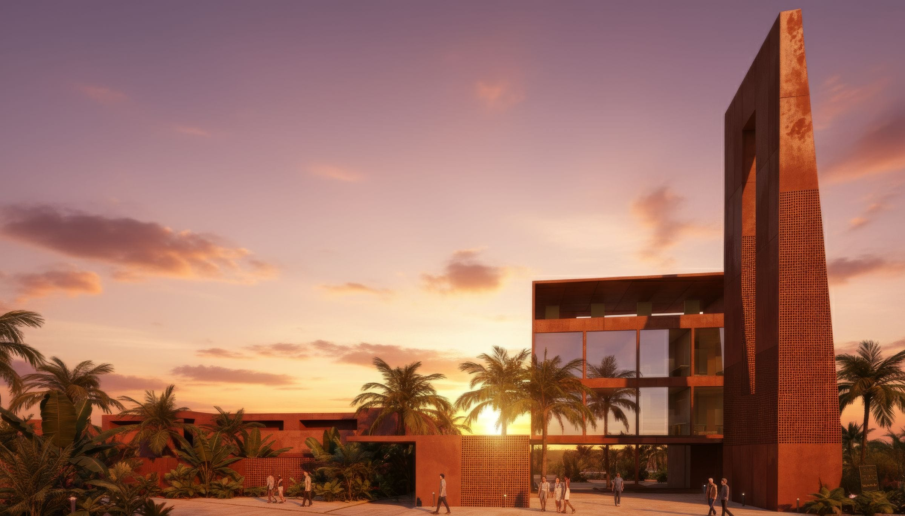

Архитектура, где воздух становится частью пространства
Терракотовые перфорированные панели, натуральный камень и терраццо в мокрых зонах в сочетании с песочно-карамельной палитрой помогают виллам мягко слиться с окружающим ландшафтом

Тихая роскошь камерных вилл с восточной атмосферой и приватностью
Редкая форма на западном побережье Бали, которая сочетает архитектурный характер и локацию

Индийский океанВиллы Black Sand Oasis
выполнены в едином архитектурном
стиле Desert Modernism

Тонкие ароматы, приглушенные звуки и тактильные детали создают ощущение уединенного мира
Эстетика, которая продолжает ландшафт острова и остается глубокой, аутентичной и личной для каждого дома

Терракотовые перфорированные панели, натуральный камень и терраццо в мокрых зонах в сочетании с песочно-карамельной палитрой помогают виллам мягко слиться с окружающим ландшафтом

Собственный сад и бассейн создают приватную территорию, где в любой момент можно уединиться, замедлиться и почувствовать себя дома, в комфорте и безопасности

Продуманная вентиляция, тени, сценарии освещения и материалы формируют ощущение прохлады и визуального спокойствия

Высота потолков 6 метров усиливает чувство свободы, открывает больше естественного света и подчеркивает чистоту линий и фактур, вдохновленных природой
Комплекс расположен в кластере Nuanu площадью 45 гектаров на берегу океана
с единым мастер-планом и городской инфраструктурой нового поколения

BLACK SANDS OASIS UNIT SPACE CITYЖители Black Sands Oasis находятся в центре событий, сохраняя приватность собственной виллы
до Nuanu
до Океана
до Чангу
до Аэропорта (Ngurah Rai)

Проект воспринимается не как набор объектов, а как целостная среда
Ритм застройки, ощущение пространства и личная территория продуманы заранее
От компактных решений до семейных резиденций, всё в общей премиальной рамке
Каждый формат сохраняет единое ДНК проекта: выразительную архитектуру, ощущение воздуха, приватность и премиальный сценарий проживания — для жизни, отдыха, workation и инвестиции
Персональный подбор формата под сценарий покупки
Возвратный депозит $1,500 для бронирования
30% после выбора и фиксации условий входа
Ежеквартальная структура, привязанная к стройке
Срок реализации проекта — 2 года
Бали входит в число сильных туристических направлений мира.
В ТОП-районах острова фиксируют рост цен на недвижимость 20% в год и доходность аренды вилл до 16% годовых.
Nuanu усиливает эту динамику за счёт ограниченного предложения и развитой городской среды
ориентир роста стоимости недвижимости в топовых районах Бали
от краткосрочной аренды вилл на развитых курортах Бали
Современный город у океана с инфраструктурой для семьи, работы и творчества

Полная модель — цена входа, график платежей, прогноз доходности и сроки окупаемости — предоставляется на личной консультации
Получить финансовую модельОснователь UNIT. и UNIT.BUILD. Эксперт по системному управлению и внедрению технологий в строительстве
Архитектор и дизайнер с 10-летним опытом коммерческих и жилых проектов в Индонезии, Европе и Франции

Планировки, цены, доступные лоты и условия входа предоставляются через личную консультацию
Получить персональную подборку виллбудет построено к 2028 г.
инфраструктуры города будущего Nuanu уже доступны
уже построено и успешно сдано